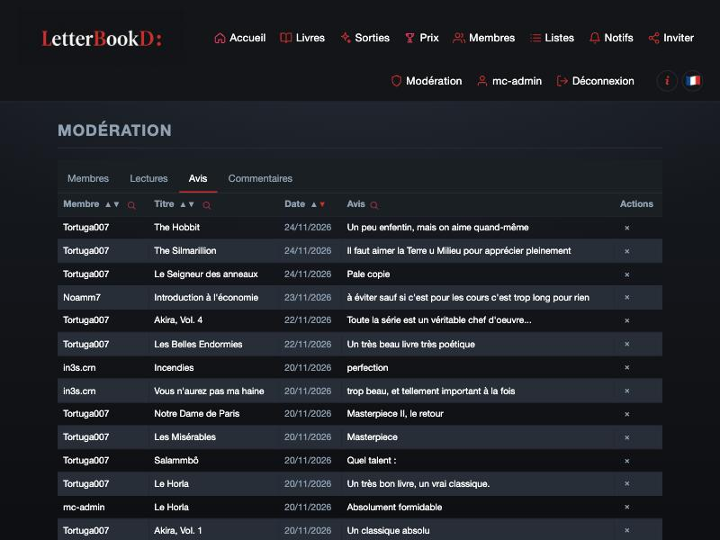

Modération — Avis Réservé aux administrateurs
À quoi ça sert : Tous les avis écrits dans le club, avec un extrait du texte. Permet aux admins de supprimer rapidement un avis déplacé sans toucher à la fiche de lecture elle-même.

Parcours
Tableau : Membre (auteur de l'avis), Titre (livre concerné), Date (date de l'avis), Avis (extrait du texte), Actions (croix pour supprimer). La colonne Avis est triable et filtrable sur le texte — utile pour chercher un mot-clé qui aurait motivé un signalement. Supprimer un avis retire le texte mais garde la fiche de lecture (note + statut) — ainsi l'étoile du membre reste dans la moyenne.
Chaînes d'action
Chaque ligne décrit un déclencheur dans l'interface, ce qu'il ouvre (modal ou formulaire), et l'effet produit.
| Déclencheur | Modal / Champs | Effet |
|---|---|---|
| Icônes tri/filtre (avec loupe sur la colonne Avis) | — | Tri standard ; filtre texte sur le contenu de l'avis. |
| Bouton croix (×) sur une ligne | Formulaire POST confirmatif. | Supprime UNIQUEMENT le texte de l'avis. La note reste, la fiche de lecture reste, les commentaires attachés restent mais perdent leur contexte. |
Filtre
Le filtre fonctionne de la même façon que dans l'onglet Membres : voir la figure de la page Modération — Membres.